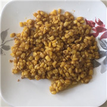
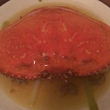
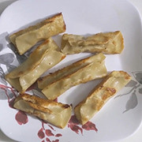
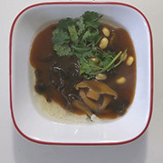
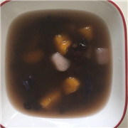

Roy
-生活-美食
菜谱
01. 油闷大虾
02. 咖喱牛肉饭
03. 水果果冻
04. 荞麦冷面
05. 豆角焖面
06. 扬州炒饭
07. 锡纸花甲
08. 手撕包菜
09. 石锅拌饭
10. 烤小羊排

11. 鱼香肉丝
12. 姜撞奶
13. 虎皮青椒
14. 金沙玉米
15. 菠菜拌扇贝
16. 豆沙南瓜饼
17. 黑椒牛仔骨
18. 卤蛋
19. 凉拌黄瓜
20. 蜂蜜冰糖山药
21. 丝瓜虾仁
22. 醋溜白菜
23. 脆萝卜条
24. 蒜蓉青菜
25. 冬瓜虾仁汤
26. 凉拌莲藕
27. 绿豆稀饭
28. 凉拌莴笋丝
29. 青椒肉丝
30. 凉拌土豆丝
31. 烤鸡翅
32. 银耳红枣汤
33. 凉拌皮蛋
34. 牛奶麦片
35. 酒酿汤圆

36. 清蒸螃蟹
37. 西红柿鸡蛋汤
38. 麻辣香锅
39. 酒香贻贝
40. 生蚝
41. 煎小鱼
42. 煎三文鱼头
43. 辣炒田螺
44. 芝麻糖
45. 卤猪蹄
46. 雪梨糖水
47. 红豆黑米粥
48. 水饺
49. 螺蛳面
50. 炸酱面
51. 烤红薯
52. 麻婆豆腐
53. 红烧茄子
54. 干锅菜花
55. 肉末茄子
56. 菠萝蜜苹果汁
57. 红烧肉
58. 家常豆腐
59. 大盘鸡
60. 搅团

61. 凉拌牛筋
62. 锅贴
63. 猪肉韭菜蒸饺
64. 口水鸡
65. 低脂早餐三明治
66. 鱼香烘蛋
67. 凉拌洋葱木耳
68. 胡辣汤
69. 油泼面
70. 红烧牛肉面

71. 番茄肉酱意面
72. 馄饨
73. 鲫鱼豆腐汤
74. 艇仔粥
75. 豆腐脑
76. 山药丸子
77. 紫菜包饭
78. 酸菜鱼
79. 避风塘炒龙虾
80. 酱牛肉
81. 煎牛排
82. 疙瘩汤
83. 宫保鸡丁
84. 干锅土豆片
85. 蒋侍郎豆腐
86. 卤鸡腿
87. 西红柿炒鸡蛋
88. 酸辣粉
89. 凉粉
90. 酸辣土豆丝

91. 拼三鲜
92. 皮蛋瘦肉粥
93. 豆浆油条
94. 芋圆红豆汤
95. 珍珠奶茶
96. 芋圆红豆烧仙草
97. 泡馍
98. 凉皮
99. 肉夹馍
100. 过桥米线